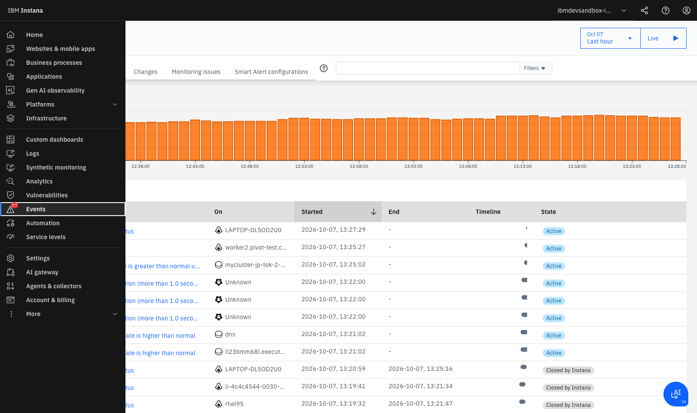
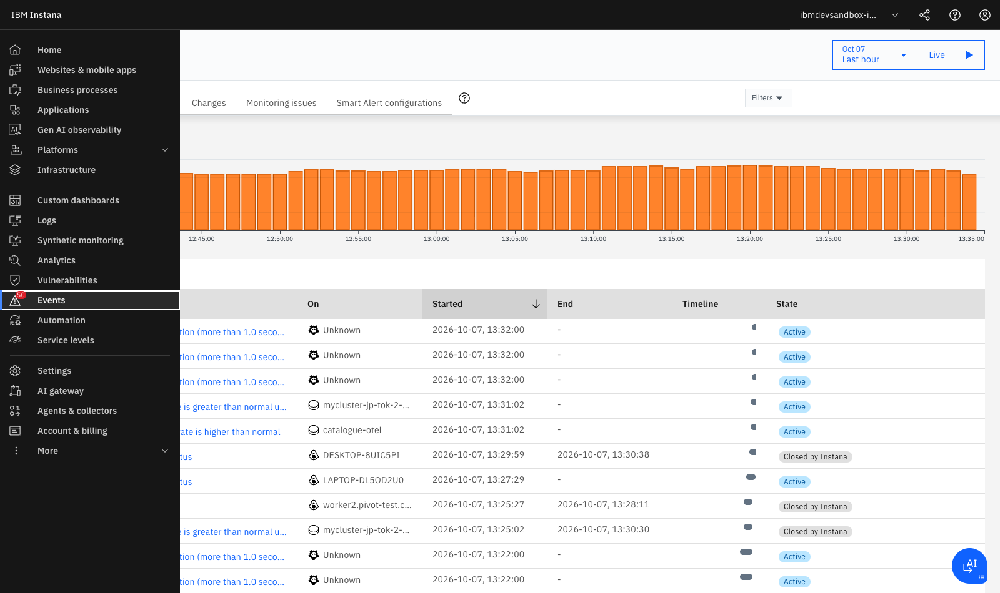

Lab 4 — Eventos, Incidentes y Root Cause Analysis (RCA)¶
LAB 4⏱ 15 minutos
1. El Problema de la Fatiga de Alertas (Alert Fatigue)¶
En arquitecturas tradicionales con docenas de microservicios y clústeres Kubernetes, la caída de una base de datos o un switch de red desencadena una "tormenta de alertas":
- La base de datos emite alerta de conexiones saturadas.
- 15 microservicios dependientes emiten alertas de timeout y errores 500.
- El API Gateway emite alertas de latencia.
- Kubernetes emite alertas de readiness probes fallidas y reinicios en bucle (CrashLoopBackOff).
Resultado: El equipo de guardia recibe más de 80 notificaciones simultáneas en Slack o PagerDuty y tarda horas en averiguar cuál de todas es la causa origen.
2. El Motor de Correlación e Incidentes de Instana¶
Instana resuelve la fatiga de alertas mediante su Motor de Inteligencia Artificial basado en el Dynamic Graph:
flowchart TD
subgraph SINTOMAS["Síntomas Observados (Alert Storm Evitada)"]
A["Alerta 1: Latencia HTTP > 2s en Gateway"]
B["Alerta 2: Tasa de Errores > 20% en /checkout"]
C["Alerta 3: Pods de Cart en CrashLoop"]
end
subgraph MOTOR["Motor de Correlación de Instana (Dynamic Graph)"]
ML["IA & Graph Reasoning"]
end
subgraph CAUSA["Causa Raíz Real Identificada"]
ROOT["💥 CAUSA RAÍZ: PostgreSQL DB - Disk Space Exhausted (100% full)"]
end
SINTOMAS --> ML
ML -->|Agrupa y sintetiza en| INCIDENTE["🔔 UN ÚNICO INCIDENTE ACCIONABLE"]
INCIDENTE --> ROOT
style SINTOMAS fill:#fff1f2,stroke:#f43f5e
style MOTOR fill:#f0fdf4,stroke:#16a34a
style CAUSA fill:#fee2e2,stroke:#ef4444
style INCIDENTE fill:#fef3c7,stroke:#d97706Clasificación de Eventos en Instana:¶
- Changes (Cambios): Modificaciones de estado en el sistema (ej. despliegue de nueva versión de código Git, cambio en variables de entorno, escalado de réplicas de Pods).
- Issues (Problemas): Anomalías aisladas de infraestructura que aún no impactan a los usuarios finales (ej. uso de CPU al 85% en un nodo secundario).
- Incidents (Incidentes): Agrupación contextualizada de múltiples Issues y Changes donde un servicio o KPI de negocio crítico está degradado.
3. Navegación por el Centro de Events & Incidents¶
- En el menú de navegación izquierdo, haz clic en Events (o Events & Incidents).
- Verás la línea temporal global de anomalías y la lista de incidentes:

-
Observa las columnas informativas:
- Event / Title: Resumen del problema (ej. Service call rate is greater than normal usage, Etcd fsync duration, IBM i DBMC status).
- On (Entity): Componente, host o contenedor exacto afectado (ej.
mycluster-jp-tok-2-bx2.2x8-robot-shop-catalogue,worker2.pivot-test...). - Started / End: Marca temporal de inicio y resolución.
- Timeline / State: Indicador gráfico de duración y estado (
ActiveoClosed by Instana).
4. Análisis de un Incidente y Árbol de Causa Raíz (Root Cause Tree)¶
- Haz clic sobre uno de los incidentes activos en la lista para acceder a su panel detallado:

- Diagnóstico del Árbol de Causa Raíz: Instana utiliza el grafo de dependencias para navegar desde el síntoma hasta el componente origen:
🔴 INCIDENTE: Keda-Scaler-RobotApp — Service Call Rate Anomaly en /catalogue
│
├── ⚠️ Síntoma en Frontend: nginx-web (Tasa de error 502 Bad Gateway)
│ │
│ └── ⚠️ Servicio Intermedio: catalogue (Node.js API con timeouts)
│ │
│ └── 💥 CAUSA RAÍZ: MongoDB - Connection Pool Exhausted
│ (Host: worker2.pivot-test... / RAM: 98% saturation)
5. Correlación con Eventos de Cambio (Change Events)¶
Uno de los factores más potentes de Instana es la correlación temporal con eventos de cambio:
- En la línea temporal del incidente, observa los marcadores circulares y banderas de despliegue.
-
Al hacer clic sobre un marcador de cambio verás:
-
Deploy Event: Despliegue de imagen Docker
robot-shop-catalogue:v2.1.0. - Author & Commit: Autor del commit en GitHub y mensaje del pull request.
- Esto permite a los ingenieros de confiabilidad (SREs) responder en segundos:
💡 "El fallo de base de datos comenzó exactamente 45 segundos después del despliegue del commit abc1234"
Registro Programático de Release Markers mediante API REST¶
Puedes inyectar marcadores de despliegue directamente desde tu pipeline de CI/CD (GitHub Actions, GitLab CI, Tekton o Jenkins) enviando una petición HTTP POST a la API de Instana:
curl -X POST \
https://ibmdevsandbox-instanaibm.instana.io/api/releases \
-H "Authorization: apiToken ${INSTANA_API_TOKEN}" \
-H "Content-Type: application/json" \
-d '{
"name": "Release v2.1.0 - Robot Shop Catalogue",
"start": '$(date +%s000)',
"services": [
{
"name": "catalogue"
}
]
}'
6. Ejercicio Práctico Guiado: Triaje de un Incidente Real¶
En la consola de Instana, realiza el siguiente ejercicio de investigación paso a paso:
- Filtrar Incidentes: En el menú Events, activa el selector de estado en
ClosedyActive. - Buscar el Evento: En la barra de búsqueda escribe
catalogueoService call rate is greater than normal usage. - Analizar la Severidad: Identifica el código de color del icono (Amarillo para Warning / Issue, Rojo para Critical / Incident).
- Navegar a la Entidad: Haz clic en el enlace de la entidad asociada para abrir la perspectiva de infraestructura del host/contenedor en el momento exacto en que ocurrió la degradación.
- Inspeccionar Métricas Correlacionadas: Observa cómo los gráficos de CPU, memoria y tasa de llamadas se ajustan automáticamente a la ventana temporal del incidente.
7. Resumen y Checklist del Lab 4¶
Al finalizar este laboratorio, has adquirido las competencias para:
 Comprender la jerarquía entre Changes, Issues e Incidents.
Comprender la jerarquía entre Changes, Issues e Incidents.- Navegar por el centro de eventos y la línea temporal de actividad.
- Interpretar el árbol de Root Cause Analysis (RCA) para diagnosticar averías en minutos.
- Correlacionar incidentes con despliegues de software (Change Events).